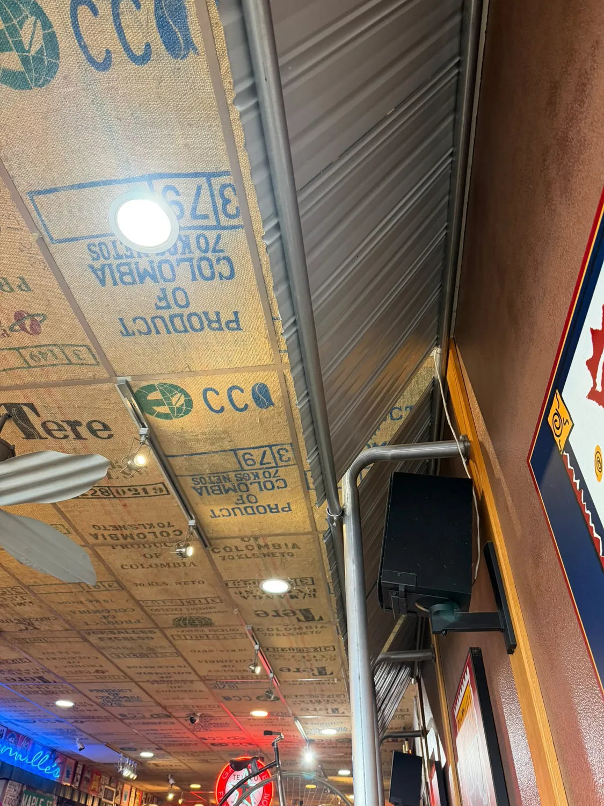

Our Story
How a man with no restaurant experience opened Quesnel's first espresso shop, and why the town still treats it like its own front room.
Ted Martindale
Before Granville's, Ted spent nine years on the road for work, drinking more highway coffee than any one person should. Somewhere along the way he decided Quesnel deserved a proper place to sit down, talk and stay a while.
So in 1992 he borrowed a lot of money, bought used restaurant equipment and opened on Reid Street with no cooking lessons and no restaurant background. He describes the result modestly: "somehow started off." Thirty-some years later, Granville's employs 26 people and is one of the oldest independent coffee shops in small-town B.C.
Ted is 80 now and still comes to work every day. He says the regulars depend on the place, especially the older folks who come in every morning, and if it closed it "would be the end of the social life of a lot of people." He calls himself "sort of a crazy old man." The town calls him something closer to a landmark.
From one espresso machine to a town landmark
- 1992
Quesnel's first espresso shop
Ted opens Granville's on Reid Street.
The carrot cake, by the numbers
Most people mark their 80th with a cake. Ted read the world record for carrot cake, decided he could beat it, and fed the town instead. Guinness World Records is still reviewing it.
The finished cake was 17 feet square and 5.5 inches thick. Much of it went to the Quesnel food bank. Sources: CKPG Today, Fox News.
Things you'll notice when you walk in


A coffee shop that acts like a community centre
Autism awareness
A $5 coupon campaign that raised money and awareness for local families.
Search and Rescue
Donations to Quesnel Search and Rescue, who find the people who didn't ask us for directions.
Neighbours in need
Fundraising for families after a fire, work with the downtown association, and 6,000 lb of cake for the food bank.
Source: Quesnel Cariboo Observer, July 2021.